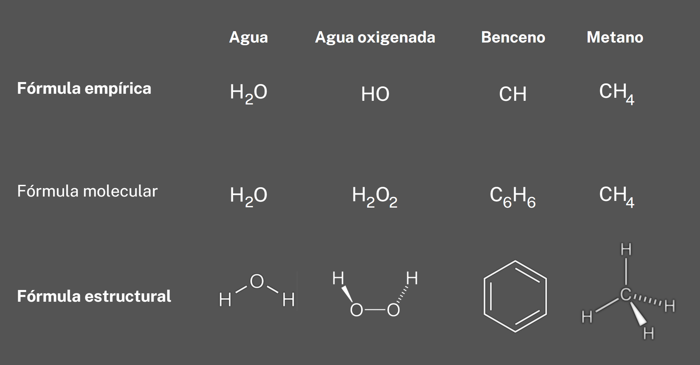

La fórmula es la representación de un compuesto químico, en la que se indica los átomos que lo forman y en qué proporción se combinan.
Las fórmulas químicas nos informan:
- Los elementos que forman el compuesto.
- La proporción en la que se encuentran los elementos en la molécula.
- La masa molecular: la suma de las atómicas de los átomos que forman la molécula. Se expresa en unidades de masas atómica (u).
Por ejemplo, la fórmula NH3 representa a una molécula de amoniaco y nos indica que:
- El amoniaco este está formado por nitrógeno (N) e hidrógeno (H).
- En cada molécula de amoniaco por cada átomo de nitrógeno hay tres átomos de hidrógeno.
- La masa molecular del amoniaco (NH3) es la suma de la masa atómica del nitrógeno y la masa atómica de tres hidrógenos.
Masa atómica del N = 14u. Masa atómica del H = 1u.
Masa molecular del NH3 = 14 + 3 x1 = 17 u.
Existen diferentes formas de expresar las fórmulas:
Fórmulas empíricas: Indica los elementos que forman el compuesto y la proporción mínima en la que se encuentran.
Fórmula molecular: Indica el número exacto de átomos de cada elemento que forman la molécula (es la que se utiliza en la formulación inorgánica).
Fórmula estructural: Indica la distribución espacial en la que se encuentran los átomos en la molécula (representa la forma real de la molécula).

Como puede verse en los ejemplos anteriores, en algunas ocasiones las fórmulas molecular y empírica coinciden.